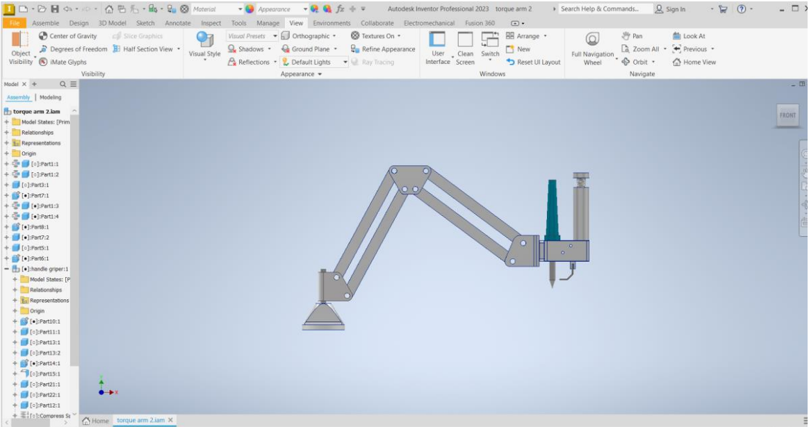
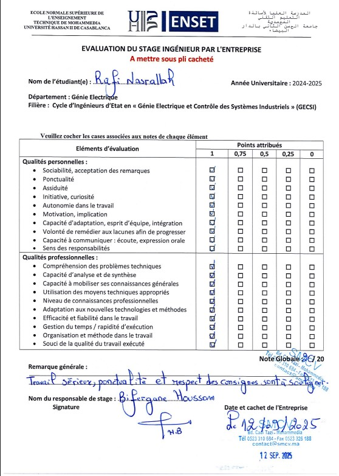

Automation (PLC/HMI), Mechanical Arm and Pneumatic Press Design, and IT Maintenance
Company: SMCV (Société Marocaine des Compteurs) | Duration: July 2025 – September 2025
Core Objectives
This project aimed to consolidate skills in automation, mechatronic design, and industrial IT, while providing concrete solutions to operational issues encountered at the SMCV workshop.
1. PLC and HMI Programming
Project Focus: Development of the full functional cycle and advanced control features for the Injection Molding Machine (Haitian Mars III 2000), emphasizing safety and operational flexibility.
Technical Details (S7-1200 / TIA Portal V19):
- Core Achievement (Functional Cycle): Implemented the full machine cycle logic, incorporating essential safety features (Emergency Stop, pressure limit detection, material presence detection).
- Advanced Control: Developed and implemented a PID control loop for precise temperature regulation.
- Modularity and HMI Interfacing: The code is fully modular. HMI communications allow operators to modify all critical parameters (temperature setpoint, injection time, maintaining time, cooling time, etc.).
- State Visualization: The HMI provides clear visible representation of the current state of the cycle (e.g., mold opening, mold closing, cooling).
HMI Screenshots & Visuals

Main page

Manual Control

Config 1

Config 2
2. Mechanical Insertion Arm Design
Problem Statement & Impact
- The previous manual correction of poorly inserted nuts led to variability in parts quality.
- The process resulted in time loss and a reduction in overall process efficiency.
Objective: The goal of this phase was to design a manual insertion arm capable of executing this task reliably, repeatedly, and seamlessly integrated into the production cycle.

Figure 2.1: 3D Model of the Nut Insertion Arm (Autodesk Inventor).
Results and Next Step Decision
The implementation of the mechanical insertion arm significantly reduced nut perpendicularity defects and improved the operator's working conditions. However, this solution presented a major limitation: insertion remained manual and sequential, nut by nut, which slowed down the production rate.
Decision: Despite the improvement, it was imperative to guarantee both part quality and high productivity. Thus, we decided to develop a solution for the simultaneous insertion of all nuts (leading to Section 3).
3. Nut Insertion Press Design and Programming
Technical Scope:
- Mechanical Design: Complete structural and functional design of the press (using Autodesk Inventor).
- Automation: PLC programming (TIA Portal) for sequence control, safety, and operational logic.
- HMI Development: Creation of the Human-Machine Interface for command, monitoring, and parameter setting.
- Thermal Analysis: Execution of a thermal study for the heating process to ensure optimal and safe nut insertion temperatures.
Visuals & Thermal Analysis

HMI nut insertion press

Evolution of nut temperature based on the heating source

Evolution of nut temperature in cool down phase
4. Industrial IT Maintenance
Context and Justification: IT workstations, running the industrial software Inhemeter, are central to the configuration, parameterization, and testing of electricity meters. Any material or software failure can cause production delays or shutdowns.
Diagnosis and Troubleshooting:
Configuration workstations were experiencing significant instability due to an unstable, Chinese-language Virtual Machine (VM) running Windows XP.
Actions Taken:
- Installed the latest stable and professional version of the Virtual Machine software with an English interface.
- Reinstalled and configured Windows XP within the new VM instance.
- Updated and installed necessary drivers to ensure compatibility with the industrial software and peripherals.
Results
These maintenance actions immediately restored the proper functioning of the configuration workstations, significantly reducing crashes and improving the fluidity of the meter programming process.
General Conclusion and Perspectives
A. Internship Summary
During this internship, I participated in several major projects aimed primarily at the improvement and automation of the nut insertion processes in electricity meters.
- Contributed to the mechanical design and dimensioning of the nut insertion press.
- Developed the PLC program and HMI interfaces.
- Conducted thermal simulations and calculations.
C. Future Perspectives
- Process Improvement: Optimization of heating and cooling cycles, integration of active cooling systems to reduce downtime.
- Skill Development: Deepening mastery of thermal simulation, mechanical modeling, and PLC programming software for future complex projects.
Supervisor's Evaluation (20/20)
Overall Remarks:
"Serious work, punctuality, and respect for instructions are to be highlighted."
(Original: "Travail sérieux, ponctualité et respect des consignes sont à souligner")
Full Evaluation Sheet:
